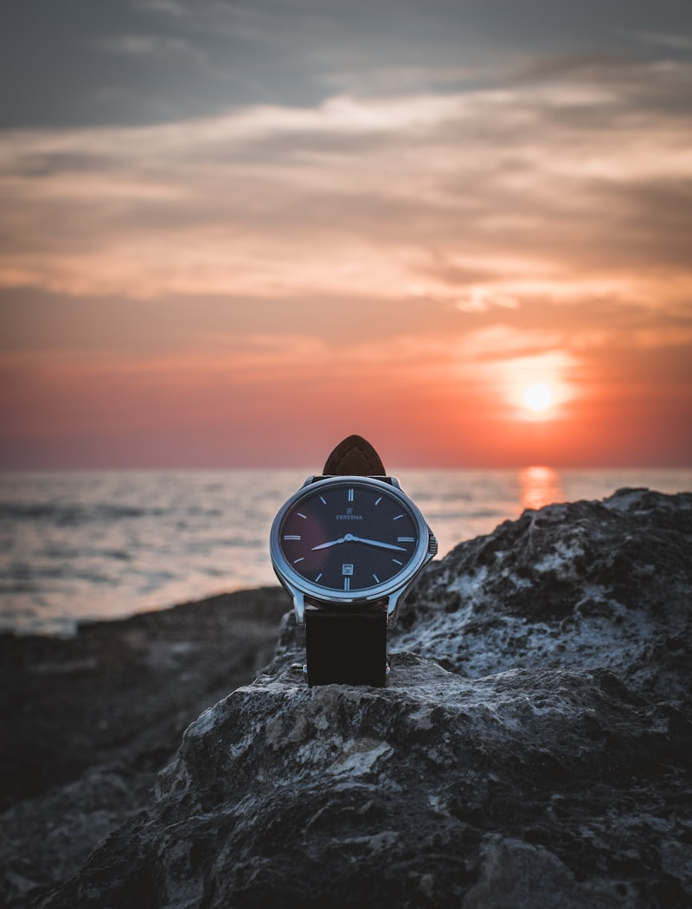

[ ATELIER CRAFT // STAGE.01 ]
An independent study of loom watch strap & leathercraft.
We publish documented research, strap tension guides, lining loft calibrations, and abrasion test standards to support sustainable watch designers.
Linen Looming
We investigate Belgian flax fiber counts, warp tension limits, and fabric weft density using mechanical pull testing scales to secure watch strap linings.
Indigo Fermentations
We document plant-based indigo color vat temperatures, fiber absorption timelines, and dye pH level boundaries to preserve historic watch canvas.
Carry Ergonomics
We reject cheap synthetic polyester bands. Every log study details fabric strap drops, inner pocket sizes, and clasp coordinates.
Loom Maintenance
We analyze timber joint alignments, antique shuttle slide frictions, and treadle mechanism clearances to restore vintage carry looms.
[ ATELIER LAB // WORKBENCH PROFILE ]
Loom Mechanics & Watch Comfort Calibrations
Our team spends weeks in mechanical workshops, cataloging loom tension loads and watch strap folding volumes. By detailing these calculations, we secure fabric durability.
We believe that watch strap layouts should follow the natural shapes of the body, avoiding plastic-coated linings, synthetic fibers, or harsh chemical dyes that leak microplastics.
Browse Loom Archives →
[ THE ADVISORY BOARD // RESEARCH TEAM ]
Research Curators
Clara Dupont
Clara directs our warp tension tests, linen fiber selections, and organic indigo dye formulas.
Dr. Marcus Vance
Marcus coordinates leather grain tanning, vegetable reduction pH, and dye fastness limits.
Silas Thorne
Silas reviews strap width shear balances, clasp edge stitch tolerances, and canvas waterproofing limits.
Laboratory Standards
We utilize calibrated equipment to test every batch of woven watch straps and leather abrasion levels.
Leather Tensile Strength
Measuring strap pull limits on mechanical tension frames to prevent shoulder strap splits under watch loads.
Strap Abrasion Cycles
Testing inner watch bands through thirty thousand rubs to verify key and pen friction resistance limits.
Dye UV Colorfastness
Exposing vegetable-dyed canvas panels to constant UV light beams to verify color retention margins under direct sun.